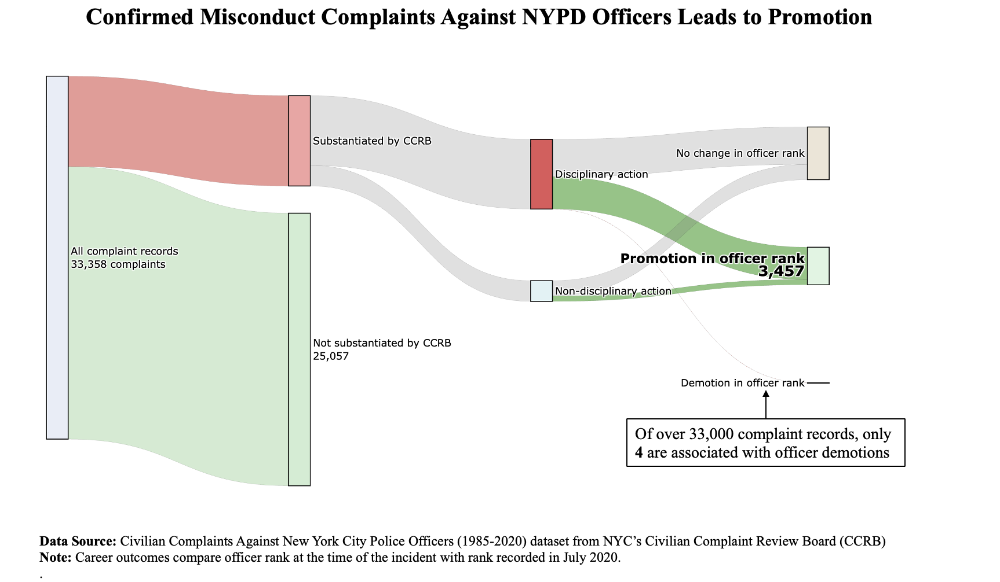
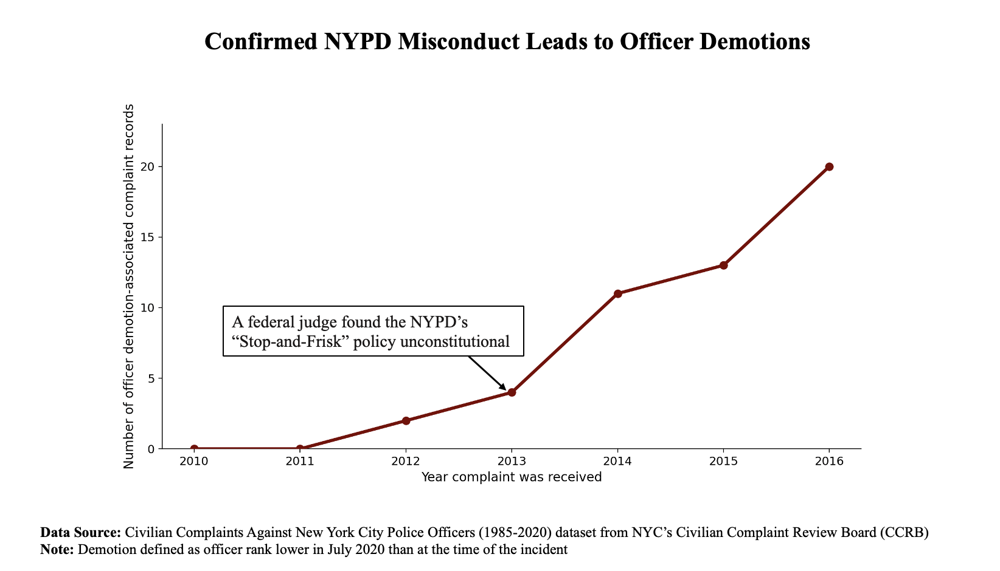

Proposition: Career consequences for NYPD officers associated with misconduct complaints are rare, even when misconduct is substantiated by the CCRB.
FOR the Proposition

Design Decisions and Rationale:
- Using complaint-record–level reporting rather than complaint-level or officer-level outcomes (-2): The visualization does not aggregate data beyond the complaint-record level, except for the annotation of demotions. Although the Sankey diagram represents complaint-record flows, the annotation highlighting demotions references the number of officers (four) rather than the number of complaint records associated with demotions. This intentionally mixes units of analysis, making the demotion outcome appear disproportionately small relative to the total number of complaint records displayed. Because the dataset contains only four officers who were demoted across the entire time period using complaint records inflates the apparent scale of positive outcomes for police (either unsubstantiated complaints or ultimate promotion) relative to the number of individual officers actually affected. I had considered using the officer level but wanted to use the promotion/demotion data and realized the scale was far too small (compared to 3996 unique officers) to make a strong case.
- Inferring career consequences using rank change rather than disciplinary records (-1): Career outcomes were calculated by assigning a numerical hierarchy to police ranks and comparing an officer’s rank at the time of the complaint with their rank recorded in July 2020. This creates categories such as promotion, demotion, and no change. However, these rank changes are unlikely to be causally related to the complaint itself, since officers may change rank years later through normal career progression. Presenting these outcomes alongside misconduct complaints implies a relationship that the dataset does not actually establish. I considered using the disciplinary outcomes recorded directly in the CCRB disposition data (e.g., charges, command discipline, instructions) rather than inferring consequences from rank changes, but promotion/demotion are more easily understood by a general audience.
- Ignoring the timing of complaints and promotions (-1): The dataset spans multiple decades, meaning officers could naturally advance in rank over long periods of service. By excluding dates from the visualization and presenting rank changes as if they were immediate outcomes of misconduct complaints, the figure can misleadingly suggest that promotions occur despite confirmed misconduct rather than as part of unrelated career advancement. I considered showing time difference between complaint and promotion but ultimately decided against it because the dataset is noisy and the time difference is long in some cases, which would make it difficult to interpret. I also wanted to avoid showing a timeline because I thought it would be more effective to show the overall distribution of outcomes rather than trends over time.
- Collapsing nuanced CCRB dispositions into simplified categories (-0.5): Several distinct CCRB outcomes—such as exonerated, unfounded, and unsubstantiated—were grouped together under the single category “not substantiated.” While this simplification makes the Sankey diagram easier to read, it removes important distinctions about how complaints are resolved. The aggregation increases the apparent share of cases where officers face no accountability and obscures the procedural nuance of the complaint review process. I considered preserving the original CCRD dispositions but ultimately decided to group them for simplicity and readability. I thought that the distinctions between exonerated and unsubstantiated would be difficult for a general audience to understand and that the overall message about lack of accountability would still come across without those details.
- Visual emphasis on the promotion outcome (-2): The “Promotion in officer rank” node is visually emphasized through larger text and bold formatting, making it the most visually prominent label in the diagram. This design choice draws the viewer’s attention toward promotions as a key outcome of substantiated misconduct complaints. By highlighting this node more strongly than others, the visualization subtly encourages the interpretation that promotions are a common or noteworthy consequence of misconduct complaints.
- Color choices to guide interpretation of outcomes (1): Color is used strategically to suggest meaning and guide interpretation. Flows associated with substantiated misconduct and disciplinary action are shown in red tones, which commonly signal wrongdoing or punishment. In contrast, promotions and unsubstantiated records are shown in green, a color often associated with success or positive outcomes. This color contrast reinforces the interpretation that officers may experience positive career outcomes even after misconduct complaints are substantiated. I had gone back and forth on color and which links and nodes of the Sankey to shade at all but I ultimately thought the red/green paradigm would lend to quick recognition of good/bad binary of outcomes for officers.
- Visual de-emphasis of alternative outcomes (1): Many flows and nodes are rendered in neutral gray tones, reducing their visual salience compared to the highlighted promotion and demotion paths. This creates a strong visual hierarchy where certain outcomes appear more important than others. By muting large portions of the diagram, the design guides the viewer’s attention toward the promotion node and the demotion annotation rather than encouraging exploration of the full distribution of complaint outcomes. I had gone back and forth on including the annotation at all, including it for the promotions or demotions. Since promotions was already visually emphasized, I ultimately decided to include the annotation for demotions (instead of, say, labeling it quantitively with "4") to balance the emphasis on the promotion outcome and to make the demotion outcome more salient than it would be otherwise. I thought that without the annotation, the demotion outcome would be too easy to miss, but I also wanted to avoid labeling it with a number because that would make it too visually prominent and take away from the overall message of the figure.
AGAINST the Proposition

Design Decisions and Rationale:
- Using cumulative counts without clearly labeling them as such on the y axis (-2): The chart plots cumulative demotion-associated complaint records, which guarantees that the line can only increase over time. However, the y-axis does not prominently indicate that the values are cumulative totals. This makes the upward slope appear like a meaningful trend in yearly demotions rather than an artifact of accumulation. I had tried at first using yearly counts instead of cumulative but there really was no trend (2, 7, 2, 7) to support the argument.
- Cropping the time range to emphasize growth (-1.5): The visualization restricts the x-axis to the years surrounding the demotion events (2010–2016) rather than showing the full multi-decade dataset. By excluding earlier periods with no demotions, the chart presents the demotion counts as a steadily increasing trend, creating the impression of rapidly growing accountability rather than a small number of events congested in a 4 year period. I was always planning to crop the x axis after realizing all the demotions were in a short range of somewhat recent history. However, I debated how many "0" demotion years to use before 2012 to highlight the "steep" increase after this point. 5 years of zeros looked more suspicious compared to 4 years of actual demotion data, so I settled on 2 (to show a trend without giving away too much).
- Ommitting contextual denominators (-1): The figure provides no information about the total number of complaints or officers in the dataset. Without this context, viewers cannot recognize that the values represent a very small number of events (only a few dozen complaint records and only four officers). This omission makes the increase appear more significant than it actually is. When I landed on this figure type, I never considered including the total number of complaints or officers in the dataset because I knew the deception would be lost, as would the narrative.
- Mixing unit of analysis to inflate apparent scale (-1): Although the underlying phenomenon involves only four officers who were demoted, the chart visualizes complaint-record–level data rather than officer-level outcomes. This allows multiple complaint records tied to the same officer to appear as separate observations, making the trend line appear larger and more substantial than the number of individuals affected. I had considered raw demotion counts by year, percentage of all demotion records by year, demotions normalized by total complaints in a year and tried them all. The cumulative framing produced the clearest visual narrative of increasing demotion-related outcomes and was therefore selected as the final visualization.
- Using annotation to imply causality (-0.5): The figure includes an annotation referencing the federal court ruling that found the NYPD’s stop-and-frisk policy unconstitutional and positions it near the point where the line begins to rise. This visual cue encourages viewers to infer a causal relationship between the policy ruling and officer demotions, even though the dataset does not establish that the demotions were related to that decision (or even to these alleged misconducts) I had considered an annotation that simply said "sharp increase in demotions after 2012" but I decided on external context to try to add credence to the implication of causality and importance to the trend observed.
Final Reflection
[WRITE FINAL REFLECTION PARAGRAPHS HERE.]